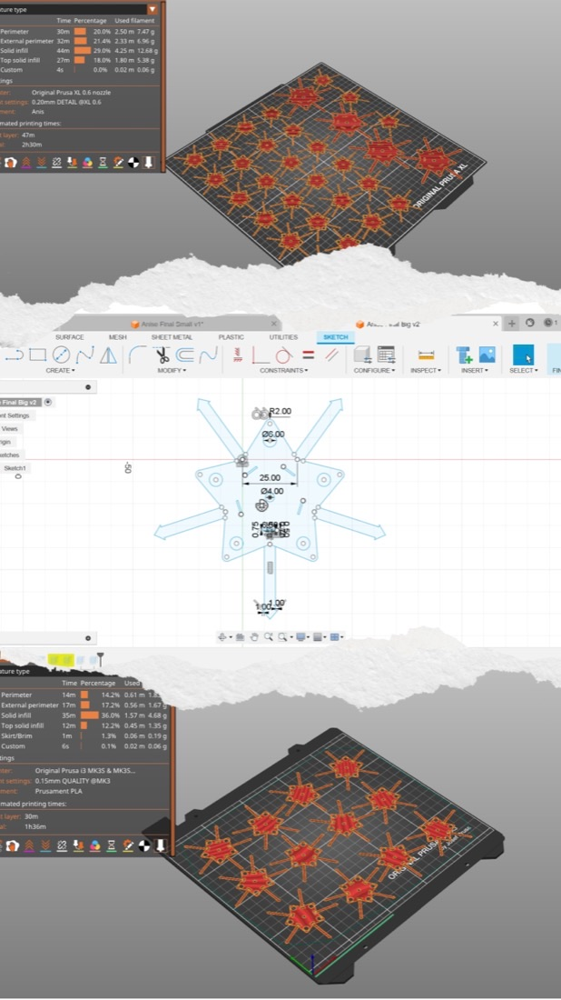

Star Anise is the design and construction of a wearable shirt using CAD design, 3D printing, and press-fit technology.
The process combines digital fabrication techniques to create modular components that interlock seamlessly, with no stitching or adhesives. It explores the intersection of fashion, technology, and sustainability, showing how digital tools can reshape garment construction.

Anis Slimani
Inter-disciplinary Creative
Star Anise is the design and construction of a wearable shirt using CAD design, 3D printing, and press-fit technology.
The process combines digital fabrication techniques to create modular components that interlock seamlessly, with no stitching or adhesives. It explores the intersection of fashion, technology, and sustainability, showing how digital tools can reshape garment construction.